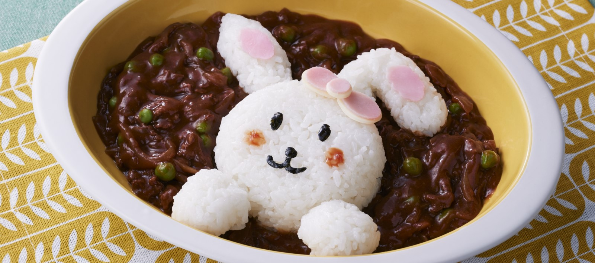

Hayashi Rice

Description
Hayashi Rice or ハヤシライス is a popular Western-style stew made with tender beef, onions, mushrooms in a demi-glace sauce. This hearty and delicious stew is served with steamed rice and only exists in Japan despite being a Western-style dish.
Ingredients
- Beef
- Hayashi Rice Stew Roux
- Mushrooms
- Butter
- Onion
- Carrot
- Beef Stock
- Red Wine
- Tomato
Steps
- Cut the meat and vegetables
- Simmer the beef and vegetables
- Add the stew roux
- Add red wine
- Simmer the stew
- Serve on a plate of rice
- Itadakimasu~! Enjoy your meal!